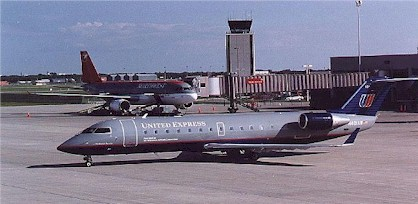
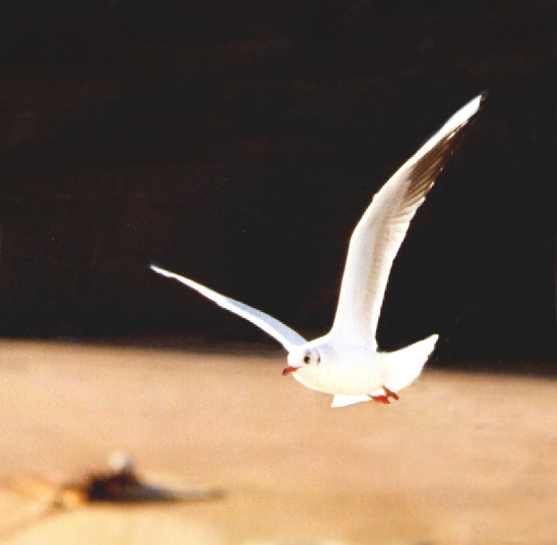

Overview
Purpose
 The purpose of this portion of the web site is to accumulate information about wildlife mitigation at airports in a manner that serves both the novice and more experienced wildlife officer or other person interested in this topic. There are two excellent references, which will be used throughout this site: The FAA's Wildlife Hazard Management at Airports Manual English Version Spanish Version French Version (Requires Adobe Acrobat.) , and the Transport Canada's Control Procedures Manual.
Introduction

Since Orville Wright's days conflicts between wildlife and airplanes have caused damage to aircraft and loss of human life. Over $500 million dollars annually is lost due to wildlife strikes in the United States alone.
There are many factors effecting today's concern about wildlife and aviation safety, three of these factors are. 1) As jet travel replaced the noisier and slower piston-powered aircraft, the chance of these jets colliding with wildlife increased. 2) Along with the change in mode of travel there has been an increase in air traffic worldwide, both military and commercial. 3) Natural habitat surrounds many modern airports which provide shelter, nesting and feeding areas for wildlife that are not usually present in the surrounding metropolitan area. This results in the majority of wildlife strikes occurring within the immediate airport environment. (FAA manual).
The following references provide general discussions of the bird strike problem:
- Wildlife Hazard Management at Airports Manual English Version Spanish Version French Version (FAA/US Dept of Agriculture)
- Control Procedures Manual:Transport Canada Wildlife Control Manual
- Bye Bye, Birdies: Brief discussion of the bird strike problem from NASA.
- FAA Wildlife Strikes to Civil Aircraft in the United States (1990-2005): NWRC-Ohio Field Station bird strike statistics
- Transport Canada wildlife strike history and resources: An introduction to the bird strike problem